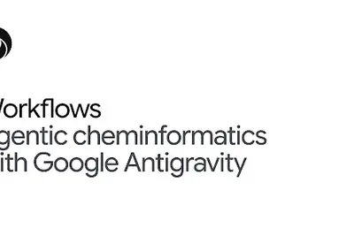
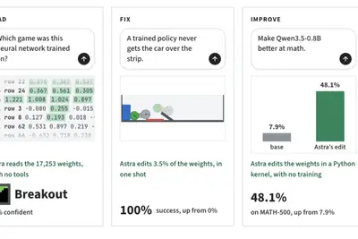
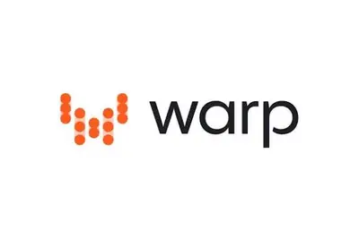
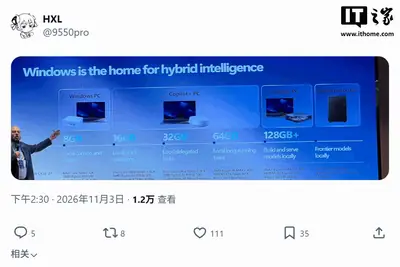
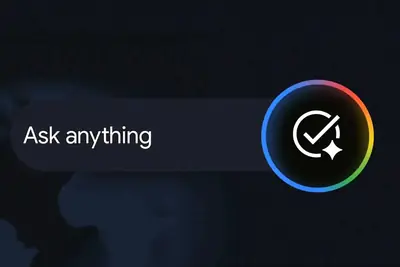
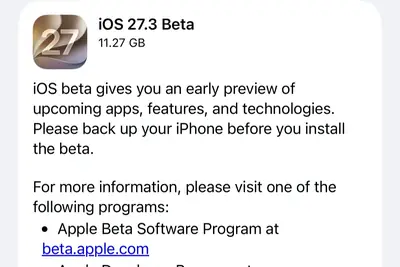
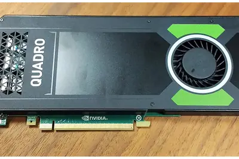
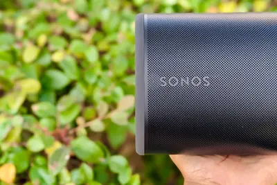
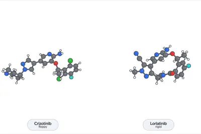
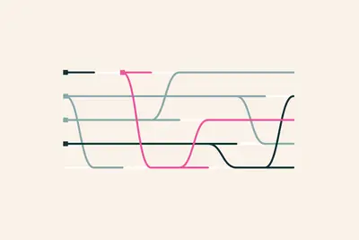

全部主題
Starting today, Siri can tune into the Apple Watch's mic with Audio Intelligence features that are available in the new watchOS 27.3 developer beta rolling out now. The two new additions are Siri Recap, which uses "ambient listening" to generate summaries of your conversation, an
Schools choosing to restrict AI altogether will no longer be able to access Google Search, as AI features are now integrated into the search engine.

Ahead of the midterms, WIRED talked to New York City’s mayor about data centers, AI in schools, and the future of the Democratic party.
Anthropic更新招股書，第三季營收約169.6億美元、為去年同期12倍多，但季增速降至47%，營業利益再度轉虧，並揭露8,954億美元算力承諾。
全球AI資料中心帶動高速光通訊需求，光電產業鏈的戰略重要性日益升溫。Marvell與Lumentum宣布合併，凸顯晶片業者加速整合光電技術的趨勢；反觀中國華為，不斷透過旗下...
IT之家 11 月 4 日消息，当地时间 11 月 2 日 OpenAI 消费者产品负责人 Adam Fry 在纽约举行的一场 OpenAI 活动期间接受了 Big Technology 的采访。他透露，ChatGPT 每周活跃用户数量已经达到 12 亿之高。 Fry 表示，ChatGPT 的用户增长速度正在进一步加快。过去 60 天内，ChatGPT 的周活跃用户从 10 亿增长至 12 亿，新增约 2 亿用户。他将这一增长速度概括为每 30 天增加约 1 亿用户。 搜索业务方面，Fry 透露，OpenAI 对 ChatGPT 内部的搜索类查询进行了统
Amazon founder Jeff Bezos and actor Jason Statham have a distinctive feature in common: They're both famously bald, and that definitely hasn't changed in the last few days. However, there are some images of the two men circulating around X, Threads, and Bluesky in which they both
Apple's new App Store rules will require 18+ ratings for dating apps and AI companions that offer sexual or romantic content.
The iPhone Duo likely won’t make it into Santa’s sleigh this year. Here’s what Apple had to say about it.
Netflix's TV app is getting a new "AI Discover" tab where the company will show experimental, AI-powered features to help you find new shows and movies to watch. The first of these experiments surfaces content based around themes, like "Something Light," "Family Movie Night," or
From hallucinations to partisan bias, artificial intelligence chatbots like ChatGPT and Claude are not helpful when it comes to Election Day.
當 AI 模型出現問題，除了重新訓練或微調，能不能直接修改內部權重來修復？美國麻省理工學院電腦科學與人工智慧實驗室（MIT CSAIL）研究團隊公布一項實驗，利用 OpenAI 的 GPT-6 Astra，僅修改阿里巴巴 Qwen3.5-0.8B 約 0.016% 的神經網路權重，就讓模型在 MATH-500 數學測試中的正確率從 7.9% 提升至 48.1%，達到原先約 6 倍。 這項研究於 11/2 公布後，迅速引起 AI 技術社群關注。研究作者武日力也（Rikiya Takehi）在 X 分享實驗成果的貼文，發布後數小時便累積超過 2.9 萬個喜歡

IT之家 11 月 4 日消息，今年 10 月，OpenAI 在一间高管会议室发现了被人偷偷安装的录音设备。多名前员工得知消息后却不觉得意外。 据路透社援引 5 名知情人士消息称，早在 2022 年底 ChatGPT 问世之前，就有员工对 OpenAI 的安全管理 提出质疑 ，并向公司高层和董事会反映问题。部分员工在沟通后认为，管理层 更关心如何追赶谷歌、Anthropic 等竞争对手 ，对安全问题的重视程度反倒不够。 这些员工认为，OpenAI 的安全管理十分松懈， 外部人员甚至外国政府 都能相对容易地获取公司的敏感技术信息。知情人士举例称，任何拥有代
鴻海此次於鴻海科技日（HHTD 26）上，展示NVIDIA DSX POD貨櫃式（Container）解決方案，透過工廠預建、機電整合及預先測試，將運算機櫃、網路設備、電力分配與...
OpenAI執行長Sam Altman時隔約1年，再度訪問南韓，與三星集團（Samsung Group）、SK集團（SK Group）高層會面，延續人工智慧（AI）基礎設施與企業應用合作。外...
OpenAI 前科學負責人 Kevin Weil 10 月 22 日宣布，正式創立全新 AI 新創公司 War […]

People, including on this staff, keep asking me with varying degrees of excitement or trepidation when the AI bubble will burst. I'll tell you what I tell them: If I knew that, I would make a life-changing bet on the market, levered up as far as I could, and then, after I made my
IT之家 11 月 4 日消息，消息源 @9550pro 昨日（11 月 3 日）在 X 平台发布推文，分享了一张题为“Windows 是混合智能之家”的幻灯片， 展示了微软“混合智能”（Hybrid Intelligence）AI PC 路线图。 IT之家此前报道，太平洋时间 10 月 7 日上午 10 点（北京时间 10 月 8 日凌晨 1 点）在美国旧金山举办的发布会上， 微软提出“混合智能”（hybrid intelligence）理念 ，强调通过混合架构，结合云端 AI 与本地计算能力，在 Windows 11 系统上实际处理用户任务。 根据曝

記憶體大廠華邦電子於 3 日舉行的法人說明會中，總經理陳沛銘指出，隨著全球 AI 與高階運算需求強勁，公司在高 […]
IT之家 11 月 4 日消息，在 2026 财年第三财季（2026 年 6 月 28 日～2026 年 9 月 26 日）财报电话会议上， AMD 首席执行官苏姿丰表示，第六代 EPYC“Venice”服务器处理器已在 2026 年第三财季开始产生营收出货 ，首批基于该处理器的 OEM 整机系统预计将于第四财季（2026 年 9 月 27 日至 2026 年 12 月 26 日）上市。 在 AMD 发布的第三季度财报中，公司整体营收达 134 亿美元 （IT之家注：现汇率约合 893.16 亿元人民币） ，其中数据中心业务营收约 85 亿美元 （现汇率
IT之家 11 月 4 日消息，当地时间 11 月 3 日，谷歌宣布将从 2027 年起调整面向 K-12（幼儿园至高中）教育用户的人工智能功能管理政策，学校管理员需要主动启用，学生账户才能使用 Gemini、NotebookLM、Gemini in Classroom 以及 Google Search 等相关服务。 谷歌同时明确表示，如果学校选择全面禁用 AI，学生也将无法继续使用 Google Search。 根据谷歌官方公告，该公司将在与学校、教师、研究人员及政策制定者沟通后，调整教育产品的管理方式。新政策实施后，学校管理的 K-12 学生账户中，

Called FlashProve, the system would let anyone check that an AI response really came from the model it claims to be from.
Cybersecurity-focused Ballistic Ventures is seeking to raise $360 million for a new flagship fund and another $130 million for a separate investment vehicle.
Article URL: https://arxiv.org/abs/2605.29713 Comments URL: https://news.ycombinator.com/item?id=50358582 Points: 159 # Comments: 19
【科技早餐】今天精選 7 則國內外重要科技新聞。 ＊Apple 營收創高！新任執行長示警記憶體漲價，旺季毛利率估降至 45%–46% 蘋果（Apple）11 月 2 日公布第四季財報，營收達 1,145 億美元、年增 12%，創歷年 9 月季度新高。上一季毛利率為 47.9%，其中約 1 個百分點來自關稅退款；公司預估 12 月旺季毛利率降至 45%–46%。今年 9 月接任的執行長約翰・特努斯（John Ternus）首次主持法說會，形容記憶體漲價前所未見，並預期採購成本持續上升。Apple 已調漲部分 Mac、iPad 與 iPhone 售價，抵銷部
Palantir's U.S. commercial revenue surpassed U.S. government revenue for the first time ever.
The five-year-old startup raised a $1.3 billion round led by Bessemer.
Many indie game developers have recently posted on social media about unexpectedly long approval wait times for their game submissions on Steam, with some of the approvals causing developers to miss their planned launch dates. For example, Studio Daimon, the team behind an upcomi
IT之家 11 月 4 日消息，苹果今日凌晨面向 iPhone 推送了 iOS 27.3 系统首个测试版本。 据IT之家此前报道，苹果智能（Apple Intelligence）及相关阿里千问大模型获得批准。苹果官方已宣布一系列 Apple 智能功能将自 11 月 4 日起随最新的 iOS 开发者 Beta 版开放测试，并将于 12 月 iOS 27.3 正式发布时面向中国用户推出。其他平台的支持将在获得必要审批后推出。 以下是 Apple 即将在支持的 iPhone 上向中国用户推出的首批功能： 实时翻译功能帮助用户在发送信息或交谈时跨特定语言进行交流

Squarespace also announced layoffs this week, but explicit ties to AI remain inconsistent.
Some GPUs will see bigger increases than others, while Intel and AMD remain mum on their pricing plans

New Sonos software and firmware updates are rolling out. Here’s what you can expect.

IT之家 11 月 4 日消息，谷歌 DeepMind 团队昨日（11 月 3 日）发布博文，宣布为 Google Antigravity 推出一套“化学信息学技能”（Cheminformatics Skills）， 帮助科研人员更快完成药物发现中的文献检索、分子分析、模型构建和新分子设计等工作。 IT之家援引博文介绍，在以肺癌药物为例的演示中，AI 智能体可在约一小时内检索数千种化合物、开展匹配分子对分析，并提出具备合成路线的新型刚性大环分子，而类似流程过去往往需要数天。 该工具将大语言模型的规划、检索与科学推理能力，与 RDKit 等确定性化学计算工


At a moment when Anthropic's compute margins should be getting better, they’re getting worse.
The latest updates to Windows 11 offer improvements in speed, performance, and memory management.
AI不只能幫你改信。Anthropic工程主管拆解高度、深度、廣度3招，附可直接複製的提示詞，教你把交給Claude的題目想得更遠、更深、更廣。
One of Roku’s most popular screensavers is about to make its last splash. Here’s how to switch before Dec. 1.
On Nov. 4, TechCrunch Founder Summit 2026 brings founders and VCs to Boston's SoWa Power Station for practical insights and connections. Register before prices increase at the door.
Discover how ChatGPT and Codex are helping engineers accelerate CAD, PCB design, simulation, and other workflows across the physical world.